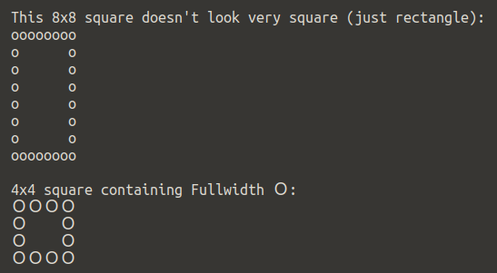

The International Obfuscated C Code Contest
Supplemental Info
The International Obfuscated C Code Contest
Supplemental Info
Current bugs and things that look like bugs but are not, as of 12 September 2020.
getch() also accepts input from some input hardware other than keyboards
With negative growth the snake drops from the middle of the body
Vertical snake has more space between snake char than horizontal
Fun fact: There’s something of a built-in test unit for some features; much like some of the other features this was not intentionally designed but is simply a fun consequence of the features I did implement.
Let’s say you want to verify that the evade mode is at the right count. How can you verify it without modifying the code? Try:
SIZE=0 SHED=1 SHEDS=1 EVADE=10 ./prog
Since you start out at size 0 and you shed every movement then when you’re size 10 (as long as you don’t eat a bug of course!) the bug should evade.
If you set it to SIZE=10 there would be a difference of 10. Now every
move you will see the size the snake is. But then…Why is it that it
doesn’t seem to move until the snake is of size 20? Because you start out at
size 10 of course (but in fact if you observe the snake won’t appear to be
of size 20 yet).
There probably are combinations that can test these types of things I just don’t at this time remember any I might have done.
One way to show this is in full is to set the initial size and growth size to a high value; then try each one individually. For example:
SIZE=100 ./prog
In this case after you make the first move the snake will keep growing and so the snake tail stays in the same spot until after it’s the ‘full size’. When it has reached the full size then the entire body of the snake will start to move too (i.e. if the tail isn’t moving it is growing or else paused).
In several tests I set the initial size to a high value, the max to a higher value still and enabled cannibalism and much of the screen was full of the snake before it started to move. The cannibalism.log has some examples of both cannibalism and a long snake that didn’t move for most of the game.
If however you let the snake get to the full size then eat a bug there can be a moment of lingering where it appears the snake moves for a few places before it then stops moving and just grows until it’s the full size.
It can also appear to be not moving when the snake is extraordinarily long and more so when the snake has just eaten: which of course is when it would grow (just like when shedding). Even so sometimes it takes a moment for the snake tail to catch up with the body (so to speak) so that it could for a few moments be difficult to know if where you’re going is going to be occupied or not.
Basically if the snake head is moving you can consider the snake to be moving or growing and that’s the important point (if you have the default status line you can also see the coordinates being updated to show this).
On my MacBook Pro the trackpad has actually triggered directions; if I were to
swipe up and then down the snake would run into itself. I believe this has to do
with the function call keypad(v, 1); which enables arrow keys.
What this means is that for both you will only have the snake head. At this point you can safely go back on yourself even without cannibalism enabled. This is intentional; a snake size of 0 is pointless but why should it not be playable anyway?
If SIZE < 0 you’ll likely win straight away since it’s unsigned and it’ll wrap
back to the maximum so you will win automatically (this is the same as the
second mode the judges suggested with SIZE=-1 ./prog).
As for the growth sizes (including shedding) if it’s < 0: the snake will still lose its length and display will still be odd: because the snake size is decreased any element beyond the reduced size isn’t touched so the snake characters will remain on the screen; only the moving snake is what matters. But it’s likely the game will be won fairly quickly because once it’s -1 in size it’ll be at the maximum size.
For example if I say SIZE=3 GROW=-2 at two bugs the game is won.
As for growing: anything > 0 it will grow that many; 0 it will not grow (which I show as a gameplay mode); and < 0 it will ‘shrink’ as I explained above. You could say that it’s defying physics by growing and shrinking simultaneously but either way negative size will force a win.
Here’s a fun output:
< <<<+
That’s from:
SHED=1 SHEDS=-1 ./prog
And right after that you would see:
YOU WIN!
X:72/156 Y:20/41 S:997/997 B:0
Try this though:
SHEDS=-1 SHED=25 ./prog
And you’ll see that you start to be the normal size but then you leave your head several places until you end up getting to the max size (by way of it being unsigned). This isn’t a bug even if it might seem like one. In fact this is the basis of the grow/shrink mode of play that I talk about in the gameplay.md (gameplay.html) file.
Here’s another thing to be aware of. Let’s say you do:
SIZE=1 GROW=-1 ./prog
How many bugs will it take before you win? In fact it’s two: you would see the head twice: the second time once you ‘shrink’ down to size 0; it would then be that if you get another bug you will be at the ‘max size’:
YOU WIN!
X:81/156 Y:35/41 S:997/997 B:2
I.e. what happens if you’re growing - for example after just eating a bug - and you’re racing towards your tail? If you’re behind it should be fine since you’re going the same speed as the snake is, right? Not quite. Because you’re growing you might end up running into your tail (depending on how much you’ve left to grow and how far away from your tail)! This happened to me once and it surprised me and I figured I better note it.
Remember: the tail at that point isn’t moving yet; the snake is growing!
For instance it might look like this (the first line is as it happens, the
second pointing to where it happens and the third being what’s left after the
rest of the snake has gone through). Doing SHED=100 SHEDS=-1:
ooooooooo>ooo>
^
>
The ^ points to the part that’s split from the snake and which will be
there on its own after the snake passes through it. Here’s an example with
it being SHEDS=-3:
<ooo<ooooo
^^^
<oo
If you go through the part that has split (which for some might be difficult to see whilst the snake has not fully left its skin) you won’t run into yourself; if you run into another part though you do. This might be a bit confusing I know but what kind of animal shrinks in size by leaving its head behind only to sprout up a new head? Actually…on second thought, I won’t go there! :)
Anyway it’s an odd idea for the snake to shrink by leaving part of its skin: that’s how they grow in the wild so it’s a misnomer. The shrinking was only ‘discovered’ because it’s an unsigned number but happily it allows for different gameplay modes.
I show a different example in the crazy.log file but what defines a coordinate which the snake occupies? If the snake breaks apart then the only part of the screen the snake is occupying is the place which is actually moving: if the snake decreases in size by 3 then the three respective characters you can go through safely. But this also means that a bug can go there! So you might see something like:
<*oooooooo
This is because the snake is no longer there: in fact in this run the snake was quite a bit lower on the screen and 25 in length.
Ilya Kurdyukov shared concern for the loop in the bug placement routine: is it safe? What he refers to is that it’s a potential infinite loop. But is it? I understand the concern and it’s something I played with a lot to be sure that it doesn’t happen. This is how it works.
To explain it I will go back to the make test program termcaps (which is
imperfect for the recommended terminal size but the max snake size is exactly
how it’s done in Snake and works well). The minimum terminal size I require in
the game is 10 x 10. This includes the walls and score line.
Now the default max snake size is 997 but when the terminal is too small it adjusts the max snake size. For 10 lines and 10 columns you would see:
$ make test
terminal supports cursor movement
terminal supports making cursor invisible
terminal supports bold
terminal supports colours
terminal rows 10 (7 playable)
terminal cols 10 (8 playable)
snake size: 49 (max size: 49)
bugs: 9 (max size: 9)
at least 28 columns recommended for snake size 49 (is 10)
at least 28 columns recommended for snake size 49 (is 10)
1 problem detected (0 fatal).
make: *** [test] Error 1
First: what’s the problem? It’s just a warning that for the snake size of 49 the recommended size of columns is 28. However this is just for the score text; with only 10 columns it will overflow and wrap to the next line(s). But if you observe that 49 is the max snake size. How is this derived and why?
With 10 rows and columns it’s calculated as 7 * 7 (i.e. it’s
(cols-3)*(rows-3). However the number of playable locations is in this case 56
(playable_rows * playable_columns). I have played with this many
times and I do not believe there should be a problem. If there is it’s from a
very poor implementation of rand() and I discuss this in
troubleshooting.md (troubleshooting.html).
There I also give some test outputs without the cap in place to give an idea of when it became a problem (or would have). In short this is known but I do not think it will be a problem and I have given resolutions. In any event without cannibal mode it’s even less likely that you’ll ever run into this problem.
The obvious question is why didn’t I put in a break? Because of the IOCCC size rule 2 and what would it do anyway? I guess it would win but to my mind that is a bug and I prefer putting in restrictions to try and make it very unlikely.
Ilya Kurdyukov also pointed out that depending on orientation of the snake there are different amount of spaces between the snake char ‘o’. This is what he had to say on it:
Yes, it is the problem, space in character terminal is not isotropic from a viewer (gamer) perspective so one step up look like two steps right.
MATE Terminal 1.20.0, and font “Ubuntu Mono Regular 13”
But, as I said, there is no terminal problem itself, it’s because character tiles are not square (except for Japanese/Chinese, Japanese even have so called full-width English characters in their encoding, presented in UTF too).
https://en.wikipedia.org/wiki/Halfwidth_and_fullwidth_forms
So the typical fonts are Half-width or close to it.

However the function mvaddch() takes a chtype which amounts to a C char
with additional information and so the full width Ｏis too big for the
function call. He reminded me of the old DOS box chars but even if this was
easily duplicable (and it might be and I don’t remember) the logic would
have to be changed for drawing the snake and in such a way that would change
the source code layout too much - to say nothing else of the fact I have
also forgotten some of what I did obfuscation wise (and the
spoilers aren’t enough here!).
That being said the font and font size does seem to have somewhat of an effect on it since his screenshots have wider gaps than mine.
Once again thank you mate for bringing this to my attention and also playing with it and providing the resources! Much appreciated! (And although you suggested it is bugging me I once again here say it’s not at all bugging me but it is very much appreciated and it means a great deal to me. Cheers.)
 |
© Copyright 1984-2020,
Leo Broukhis, Simon Cooper, Landon Curt Noll
- All rights reserved |